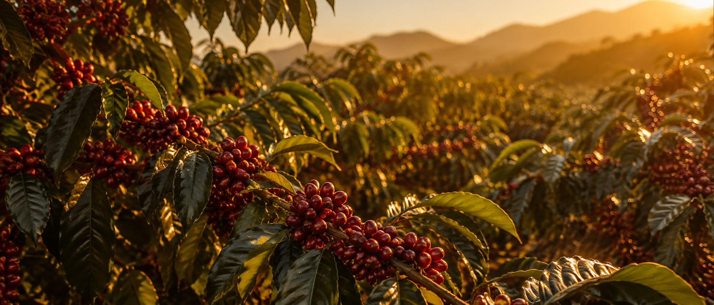
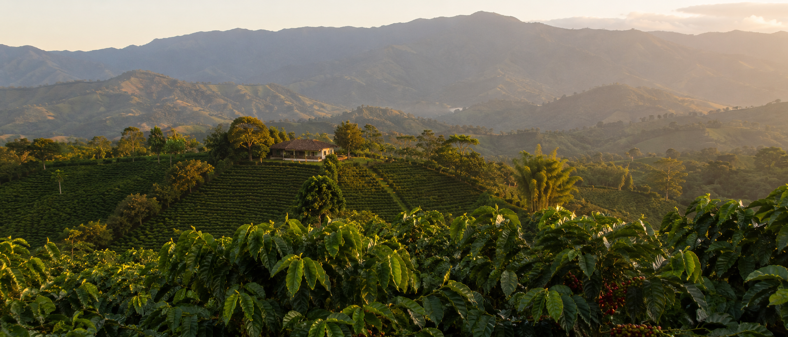
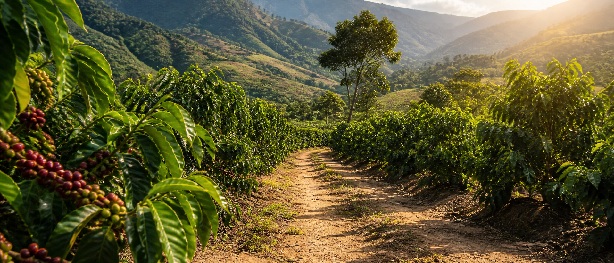
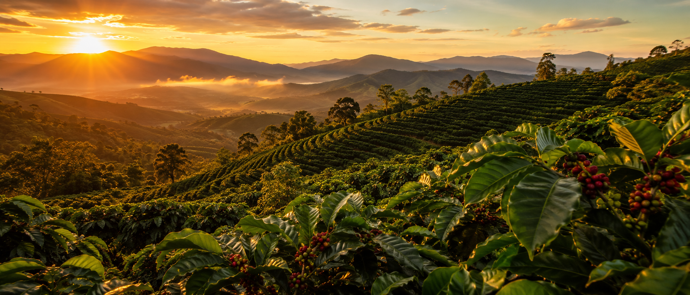

Finca La Bonita se inspira en la riqueza cafetalera de Santa Rosa, una región privilegiada por su clima, su tierra y la pasión de su gente.
Aldea El Bosque, Santa Cruz El Naranjo
Santa Rosa, Guatemala
1,600 m.s.n.m., una altura ideal para un café con carácter.
18°C - 24°C, cálido y perfecto para el cultivo del café.
Suroriente de Guatemala, tierra fértil y tradición cafetalera.
Entre montañas, cafetales y caminos de tierra, cada rincón de Finca La Bonita refleja el origen de nuestro café.




Usa las flechas o arrastra la imagen para recorrer los paisajes.